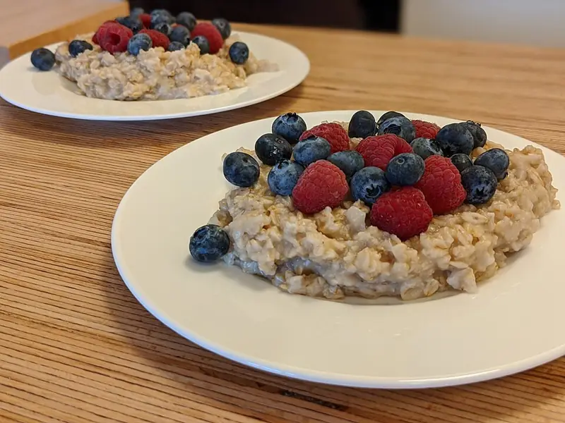

Фото: Shisma, CC BY 4.0

Овсяная каша на молоке
Сливочная овсянка из хлопьев геркулес за 10 минут
12 мин2 порц.347 ккал на порциюБ 12 · Ж 12 · У 48Русская кухня
Продукты на 2 порц.
- Овсяные хлопья1 стак.
- Молоко2 стак.
- Сахар1 ст. л.
- Соль1 щеп.
- Сливочное масло10 г
- Ягоды (свежие или замороженные) по желаниюпо вкусу
Как готовить
- Налейте молоко в кастрюлю и доведите до кипения на среднем огне, следя, чтобы не убежало.
- Добавьте соль и сахар, всыпьте хлопья, перемешайте.
- Варите на слабом огне 5-7 минут, помешивая, пока каша не загустеет.
- Снимите с огня, положите масло, накройте крышкой на 2-3 минуты.
- Подавайте с ягодами, бананом или орехами.
Совет. Пропорция 1 стакан хлопьев на 2 стакана молока. Хотите погуще - уменьшите молоко до 1,5 стакана. Каша загустевает и после варки.